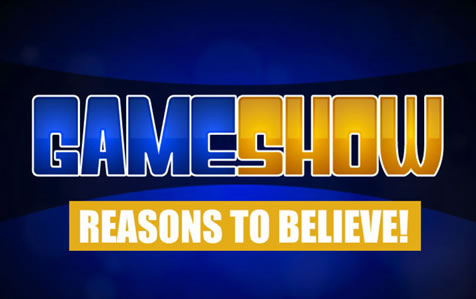

Steps for the Activity
- Brief the activity - The Intergalactic planning board has decided that Earth is a doomed planet and so the perfect place to put a high-speed Hyperspace Highway. Your task: Convince them Earth is not doomed with evidence that humanity is going to come around and pull themselves out of the mess they’re in. Prepare a 1 minute presentation 
- Give people time to prepare their pitch - a 1 minute impassioned pitch - a reason to believe the earth is not in fact doomed. These can be examples of hope and courage from anywhere (not just Greenpeace)
- Assign 2 people to be alien judges and give them their masks so they can get into character. Give each judge 2 pieces of paper - one that says Convinced and one that says Not Convinced. After they’ve heard each pitch they get to decide how convincing it was. It tends to work best if one judge is a bit mean and the other is more forgiving.
- Get the earthlings to present the judges with their pitches - each person comes and stands in front of the judges on a soap box (or chair) and delivers their presentation
- The alien judges make a final call about whether to pave over the earth.
Materials
- 2 willing alien judges
- 2 Alien Masks
- A soapbox
Discussion
Once the group have presented their pitches ask for reflections on what they heard. How did the pitches make them feel? What surprised them? How did it feel different? Are they in the habit of presenting positive examples? What role does Greenpeace have in making people aware of all this positive change?